Wavelets Are All You Need for Autoregressive Image Generation
什么是小波变换
参考视频：Wavelets: a mathematical microscope | B站中文字幕版
函数点积
向量点积表示了两个向量的相似度，两个向量点积越大，表示两个向量越相似。
当点积为0时，表示两个向量正交（垂直）。点积大于零时，表示两个向量是同相关的。点积小于零时，表示两个向量是反相关的。
从向量点积推广到函数点积，下面是函数点积的定义：
现在我们明白函数点积可以表示两个函数的相似度，后面会用到小波变换中。
时间频率二相性 time-frequency duality
时间频率二相性是指一个信号在时间和频率上的双重表示。
傅里叶变换
傅里叶变换目的将一个函数分解为多个正弦函数和余弦函数的和，这些函数叫做分析函数，因为它们构成了频率表示的基底。
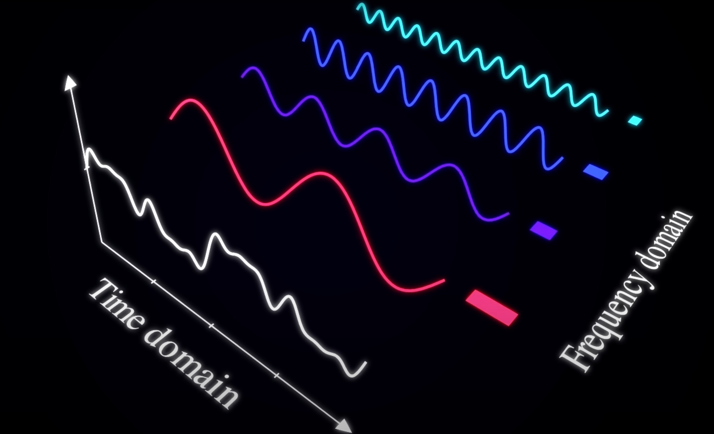
频域(frequency domain)告诉我们每个频率在函数中的贡献大小，逆傅里叶变换让我们从频域回到原始函数(时域time domain)。
同一个函数就有两种不同的表示方式：
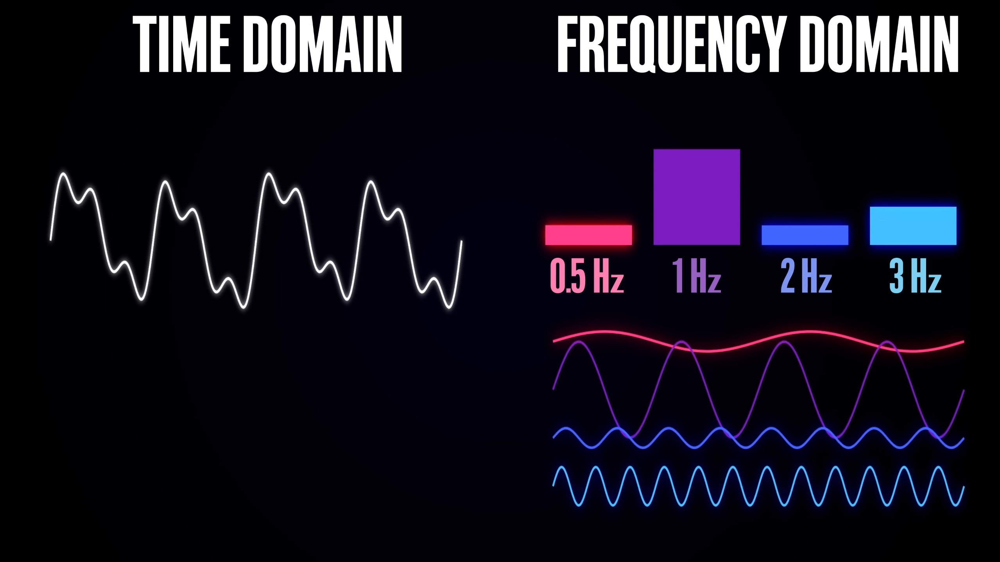
但是傅里叶变换的缺点是它不能告诉我们信号在某个时间点上的频率，它的本质是在时间上压扁信号，从而找到频率成分。傅里叶变换只是频率的函数，它不能告诉我们某些频率何时开始，何时结束。
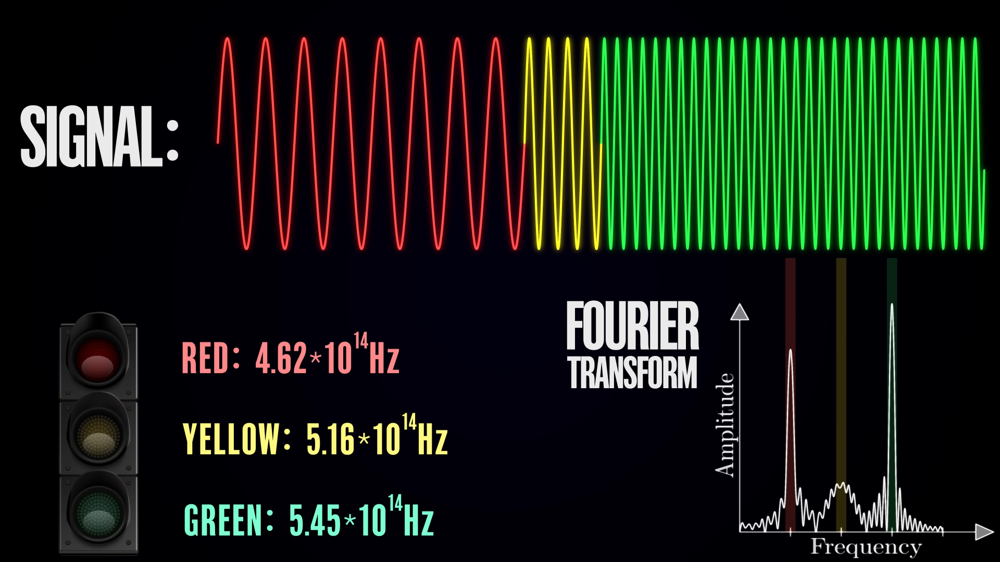
假设这是一段红绿灯的信号，红黄绿三种颜色拥有不同的频率和持续时间，对这个信号进行傅里叶变换可以得到三个峰，我们只知道哪个频率出现了。当改变每个灯亮起的时间和先后顺序，又或者是同时亮起三个灯，傅里叶变换的结果不会有太大的改变。
事实上，拥有完美的时间和频率分辨率是不可能的，二者之间总存在时间取舍，这是海森堡不确定性原理(某些物理量不能同时被精确地测量)的一种体现😢
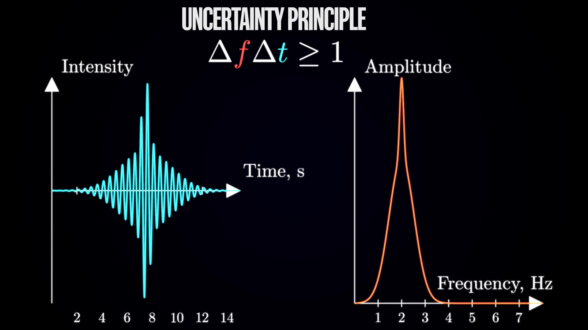
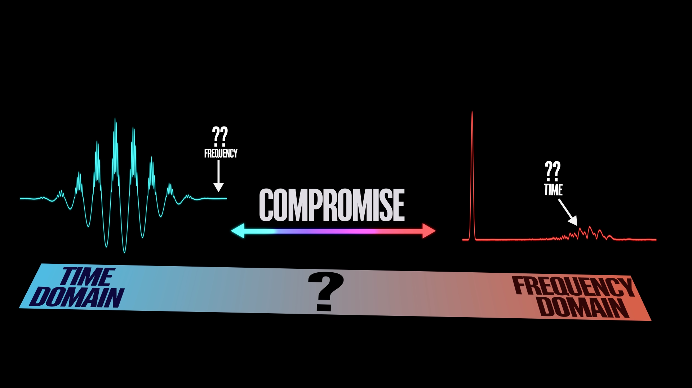
- 时域：我们可以精确地知道函数在每个时刻的值，但代价是完全不知道该时刻的频率是多少
- 频域：我们可以精确地知道信号中存在存在哪些频率, 但我们无法了解它们的时间动态
所以有没有一种方法来牺牲一些时间分辨率和频率分辨率，从而来同时了解时域和频域的信息呢？
还真有!!!它就是小波变换!
小波函数
它使用一类特殊函数(小波函数)，来分析信号。小波的重要特征是它是短时性的，在时域上具有局部性。从数学的角度上看，小波函数是满足特定条件的一个函数族，每一种小波函数都具有特定的性质，对特定应用进行了优化。
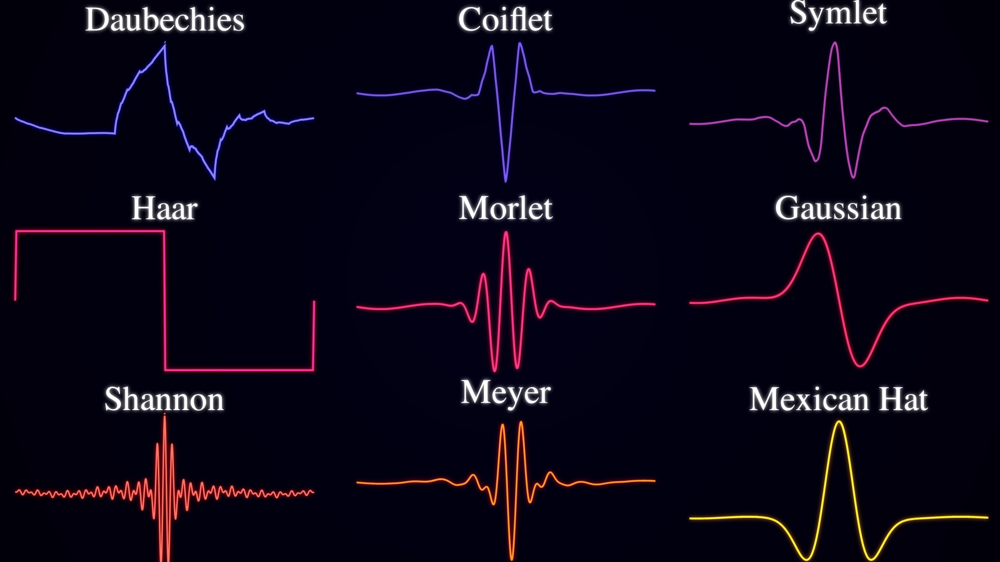
小波函数
- Zero mean: 小波函数在时域上的平均值为0，即
。这称为容许条件(admissibility condition), 更正式的说法是小波函数不应含有零频分量 - Finite energy: 小波函数的能量是有限的，即
。这意味着小波函数在时域上具有有限的长度
Morlet 小波是使用最广泛的小波之一，常用于时间序列分析。它的定义是将特定频率的余弦波乘以高斯曲线进行阻尼

当我们进行傅里叶变换时，我们把时域上一维的y(t)转换为频率表示的Y(f)，我们可以调整正弦波的频率，对于每种频率，都可以计算该频率产生的波的贡献。
小波变换的主要区别是这个一维函数会扩充到二维
控制时间和频率从母小波得到子小波，控制时间意思是沿着时间轴前后平移母小波，控制频率意思是改变母小波的频率。
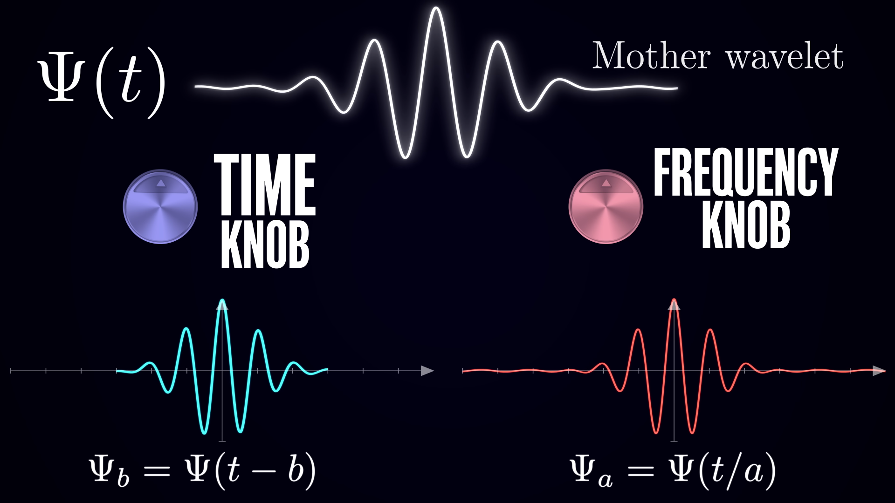
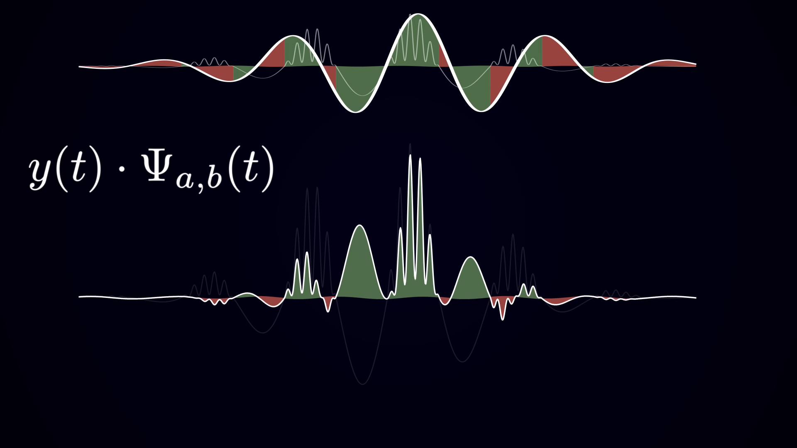
上面是母小波和信号的匹配度，下面是子小波和信号的匹配度。绿色表示匹配，红色代表不匹配。上面计算的积分
现在就可以变化时间参数

这个滑动点积的过程称作卷积
然后可以对其他的频率进行相同的操作，得到不同频率下，母小波和信号的匹配度。
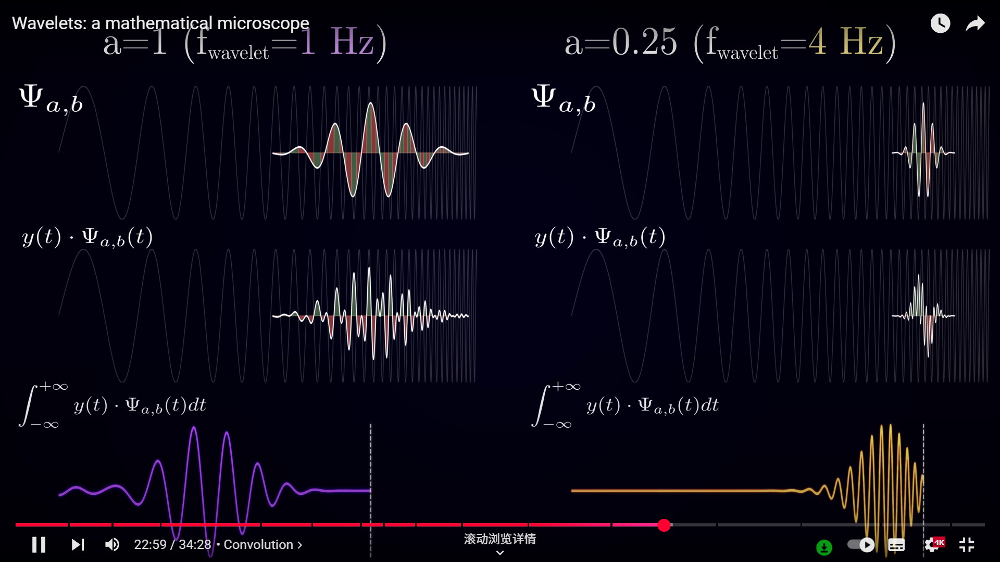
这就是小波变换的核心：通过改变缩放和平移参数，我们可以用不同尺度的分析小波扫描信号，看看某个时间哪些频率最显著。
当固定频率时，变换时间得到的
我们之所以在卷积过程中得到这种震荡，是因为我们只使用了Morlet小波的实部，Morlet小波本质上是一个复指数，其振幅被高斯曲线所调制,这是它在三维中的样子
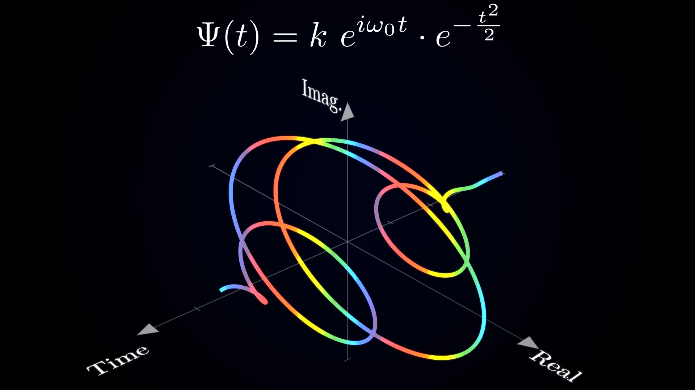
下面是它实部与虚部的投影

现在关键在于同时计算信号实部与虚部的卷积，那么固定尺度的卷积函数会将一个实数（也就是平移参数b）映射到复平面上的一个点，这个点的实部是该时刻与小波实部的卷积，虚部是该时刻与小波虚部的卷积。某一频率的功率即它在每个时刻的贡献程度就等于对应点到原点的距离（也就是复数的模长）它测量了特定频率分量随时间的功率

下面是绘制的递增的正弦曲线的小波变换结果,可以看到随着时间的推移，频率逐渐升高，而振幅基本不变。
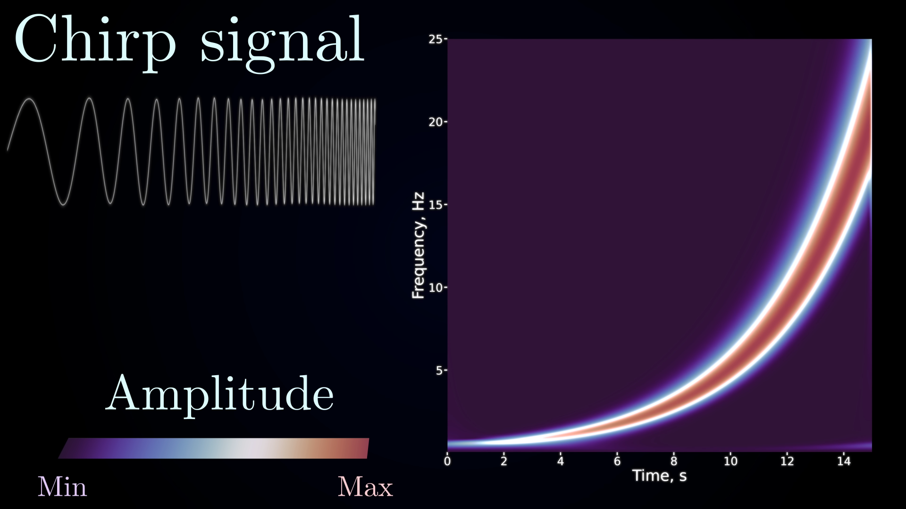
引用到前面的红绿灯的例子，可以立即发现异常
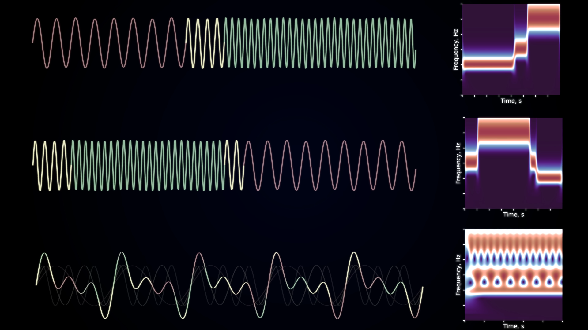
使用小波来分析大脑信号
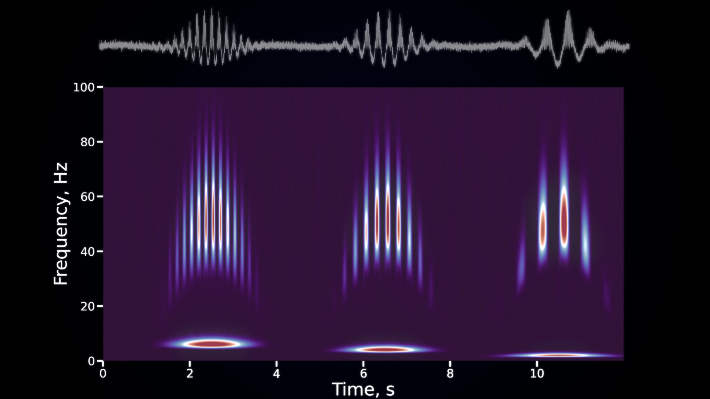
可以看到低频节律有三个明显的阶段，其频率逐渐降低，我们可以轻松量化每个模式的持续时间和频率；此外，每个阶段都有与几种高频节律相关联,它们的频率呈钟形分布，同时我们可以客观地量化各种参数，比如频率值和持续时间
傅里叶变换具有完美的频率分辨率，但不包含时间信息，海森堡盒看起来就像水平线。而小波变换提供了极端情况中最佳地折中方法，它的设计使得它在低频时，海森堡盒既宽又短，但在高频时，海森堡盒既窄又长。
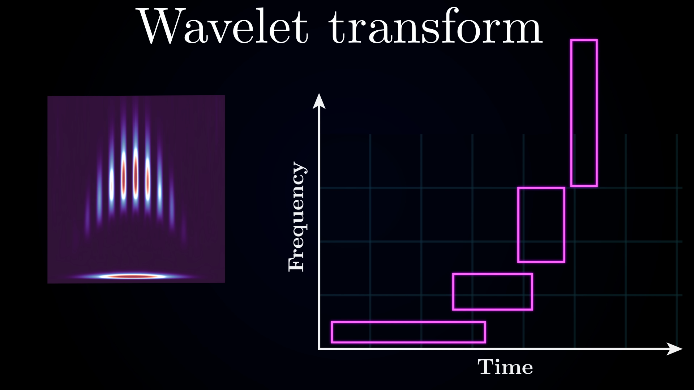
方框的长代表时间不确定性，方框的宽代表频率不确定性。
这样的设计非常合理，因为通常像1Hz这样的低频会持续很长时间，所以高时间分辨率不那么重要，但频率值时1Hz还是2Hz，可能会有很大差别。另一方面，高频通常持续时间很短，所以频率分辨率不那么重要，但时间分辨率很重要。
消失炬(vanishing moments)
定义
消失矩是指一个函数在特定点附近的一种性质，具体来说，如果一个函数
对于
小波分析中的应用
- 正交性：
- 具有消失矩的小波函数可以更好地满足正交性条件，从而使得小波变换更加精确和稳定。
- 多分辨率分析：
- 消失矩的存在使得小波变换能够在不同尺度上有效地捕捉图像的细节信息。具体来说，消失矩越多，小波函数在高频部分的平滑性越好，能够更好地分离出图像中的高频细节。
- 数值稳定性：
- 具有消失矩的小波函数在数值计算中具有更好的稳定性，能够减少计算误差，提高计算精度。
- 压缩性能：
- 在图像压缩应用中，消失矩的存在使得小波变换能够更有效地去除图像中的冗余信息，从而实现高效的图像压缩。
具体例子
Haar小波：Haar小波是最简单的小波函数之一，具有一个消失矩。Daubechies小波：Daubechies小波是一类具有多个消失矩的小波函数，通常记作dbN，其中N表示消失矩的个数。例如，db4小波具有4个消失矩。
贡献
- 小波图像编码：它通过从最重要的小波系数的最高有效位开始排序信息，将图像的视觉细节从粗到细进行标记。将图像的视觉细节从粗到细地进行标记。
- transformer的变体：它重新设计和优化了transformer的架构，以适应这种“小波语言”中的标记序列。
Wavelet Image Coding
移动和变换母小波函数
解析：
是 母小波 函数。这是基本的小波，通过缩放和平移生成其他的小波。它具有特定的形状和性质，使其能够用于各种信号处理任务，如小波变换。 和 是控制母小波 缩放 和 平移 的参数： 控制小波的 尺度 ，指示小波被拉伸或压缩的程度。母小波前面的因子 随着尺度的变化调整其幅度。 控制小波的 平移，沿着 -轴移动小波。这使得小波可以在时间（或空间）域中“移动”到不同的位置。
表示母小波的 平移和缩放： 通过一个 的因子缩放输入 ，意味着小波根据 的值被拉伸或压缩。 - 减去
将小波平移 单位，沿着 -轴移动。
其中，母小波通常具有紧凑的支持（或快速衰减），并有 r 个消失矩
紧支撑（或快速衰减）：
- 紧支撑意味着小波函数在有限的区间内非零，而在这个区间之外则为零。换句话说，小波局限于空间的某个区域，不会无限延伸。
- 快速衰减意味着小波函数在远离其中心时会迅速接近零。它不一定立刻消失，但衰减得足够快，以至于在某个点之后可认为其值为零。
这两个性质在小波中是很有用的，因为它们允许在特定区域内进行高效分析，而无需处理无限扩展的函数。
消失矩（Vanishing Moments）：
“消失矩”指的是一个函数（或小波）在积分时的行为特性。具体来说，如果小波有 个消失矩，则满足： 这意味着，当你将小波与任何次数低于
的多项式相乘（即 ）并在整个空间上积分时，结果为零。 - 例如：
- 如果小波有1个消失矩，
，意味着小波在整个域上的积分为零（即它的”平均值”为零）。 - 如果小波有2个消失矩，
，意味着它的”一阶矩”（即它的加权中心）也为零。
- 如果小波有1个消失矩，
为什么消失矩重要？
- 消失矩反映了小波捕捉信号某些特征的能力。例如：
- 一个具有1个消失矩的小波能够捕捉信号中的变化，如边缘。
- 具有更多消失矩的小波（例如，二阶或三阶）能够更好地逼近平滑函数，因为消失矩的数量越多，小波越接近于多项式（次数为
），可以逼近更平滑的行为。
- 例如：
简而言之：
- 紧支撑或快速衰减确保小波是局部化的，不会无限延伸。
- 消失矩决定了小波如何表示或逼近不同类型的函数，尤其是平滑或类似多项式的函数。
具有更多消失矩的小波通常能够捕捉信号中的更详细结构和光滑变化，同时仍保持良好的局部化。
小波系统可以被构造成作为L2(R)的基。为了便于应用，还会构造
- 小波函数 (\psi_{j,k}(x)) 用于形成 (L_2(\mathbb{R})) 的基，即实数轴上平方可积函数的空间。
- 对偶小波函数 (\tilde{\psi}) 被定义为满足以下条件：
[
\langle \psi_{j,k}, \tilde{\psi}_{j’,k’} \rangle = \delta_{j,j’} \delta_{k,k’},
]- 其中 (\langle \cdot, \cdot \rangle) 表示内积, 测量了两个小波函数之间的相似度， 如果两个小波相同，内积值较大（通常为 1）。如果不同，内积值为零。
- 克罗内克尔 delta
，当 时，值为1，否则为0。 - 类似地，(\delta_{k,k’}) 确保只有当平移参数 (k) 对两个小波相同时，内积才为 1。
- 因此，方程式 (\langle \psi_{j,k}, \tilde{\psi}_{j’,k’} \rangle = \delta_{j,j’} \delta_{k,k’}) 的意思是，小波 (\psi_{j,k}) 和 (\tilde{\psi}_{j’,k’}) 是正交的，除非它们的尺度 ((j)) 和位置 ((k)) 完全匹配。当 (j = j’) 且 (k = k’) 时，内积为 1；否则，内积为 0。
- 对偶小波 (\tilde{\psi}) 为小波系统提供了必要的结构，使其既能保持正交性，又能保持可逆性，从而实现信号的精确分析和重建。带有克罗内克尔 delta 的方程式确保只有在尺度和位置都匹配的小波才会对信号做出贡献，从而保持重建的完整性。
通常，从由满足双尺度方程的缩放函数 φ ∈ L2(R) 生成的多分辨率分析 MRA(Multi-Resolution Analysis) 开始构建小波系统。
MRA是一种用于构造小波系统的技术。它通过将函数分解为不同的分辨率层级来实现。
- 缩放函数（(\varphi)）：MRA从一个缩放函数(\varphi \in L_2(\mathbb{R}))开始，这个函数是构建小波函数的基础。缩放函数满足二尺度方程：
[
\varphi = \sum_k a_k \varphi(2 \cdot - k),
]
其中(a_k)是缩放系数，(\varphi(2 \cdot - k))表示缩放和平移后的缩放函数。 - 这个方程是创建小波变换多分辨率结构的基础。其核心思想是通过不断缩放和平移缩放函数(\varphi)来生成小波及其对偶小波。
- 缩放函数（(\varphi)）：MRA从一个缩放函数(\varphi \in L_2(\mathbb{R}))开始，这个函数是构建小波函数的基础。缩放函数满足二尺度方程：
正交归一基：
- 小波函数(\{\psi_{j,k}\})和缩放函数(\varphi)共同构成了( L_2(\mathbb{R}) )的正交归一基。这意味着它们彼此正交且归一化（即，当比较相同的函数时，其内积为1，其他情况下为0）。
- 这种正交归一性确保了( L_2(\mathbb{R}) )中的每个函数都可以唯一地表示为小波和缩放函数的和。
小波变换：
- 小波变换可以理解为利用小波(\psi_{j,k})在多个尺度上分析信号，从缩放函数(\varphi)开始，逐步进展到更高分辨率的层级。系数是通过函数与缩放函数和小波函数的内积来确定的。
图像展示了使用多分辨率分析（MRA）构建小波系统的过程，并提供了一个使用Haar缩放函数和Haar小波的例子。让我分解一下关键概念：
多分辨率分析（MRA）：
符号 ( V_j ) 代表 MRA 中的空间，每个 ( V_j ) 是缩放函数 (\varphi) 的某些缩放和平移版本的跨度：
[
V_j = \text{span}\left\{ \varphi_{j,k} := 2^{-j/2} \varphi(2^{-j} \cdot - k) : k \in \mathbb{Z} \right\}, \quad j \in \mathbb{Z}.
]
这意味着 (V_j) 包含了在尺度 (j) 和位置 (k) 下，缩放函数 (\varphi) 的所有缩放和平移版本。MRA 需要满足以下属性：
- 空间序列 (V_2 \subset V_1 \subset V_0 \subset V_{-1} \subset V_{-2} \subset \dots) 形成一个嵌套链。
- 每个空间 (V_j) 都包含在下一个空间中：(V_j \subset V_{j-1})。
- 换句话说，从 (V_2) 到 (V_1) 再到 (V_0) 等，每个空间变得越来越“大”，或者说包含了更多的函数。
- 所有这些空间的交集是零函数：( \bigcap_j V_j = \{0\} )。
- 所有这些空间的并集是 ( L_2(\mathbb{R}) )，即实数线上平方可积函数的空间：( \bigcup_j V_j = L_2(\mathbb{R}) )。
- 空间序列 (V_2 \subset V_1 \subset V_0 \subset V_{-1} \subset V_{-2} \subset \dots) 形成一个嵌套链。
对偶缩放函数：
- 引入了一个对偶缩放函数 ( \tilde{\varphi} )，用于促进如重构等应用。它满足正交性条件：
[
\langle \varphi_{0,k}, \tilde{\varphi}_{0,k’} \rangle = \delta_{k,k’},
]
其中 ( \delta_{k,k’} ) 是克罗内克δ符号，表示当 (k = k’) 时内积为1，否则为0。 - 空间 (V_j) 中的函数 (f) 可以表示为与对偶缩放函数的内积之和：
[
f = \sum_k \langle f, \tilde{\varphi}_{j,k} \rangle \varphi_{j,k}.
]
这使得可以通过缩放函数的系数构造信号。
- 引入了一个对偶缩放函数 ( \tilde{\varphi} )，用于促进如重构等应用。它满足正交性条件：
小波构造：
在构造了缩放函数之后，下一步是构造小波函数 (\psi)，使得小波空间 (W_j) 为：
[
W_j := \text{span}\left\{ \psi_{j,k} : k \in \mathbb{Z} \right\}.
]
这个空间与缩放函数空间 (V_j) 正交，而小波 (\psi) 捕捉了不同尺度和分辨率之间的差异。对于一个特定的 MRA 示例，Haar缩放函数和Haar小波定义为：
[
\varphi(x) :=
]
和 Haar小波 定义为：
[
\psi(x) :=
]
Haar缩放函数是一个简单的阶跃函数，而Haar小波是一个分段函数，在区间的中点处跳跃。
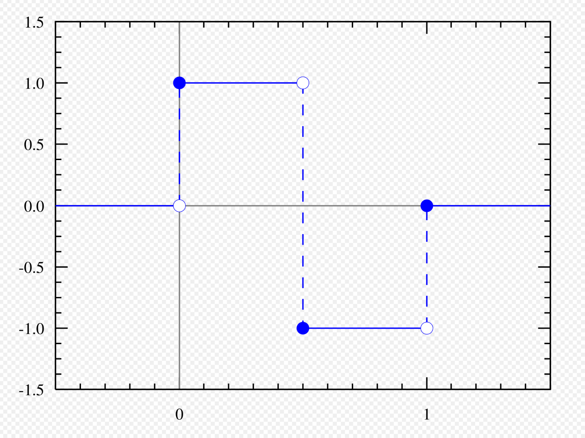
- 小波变换：
- Haar缩放函数和Haar小波提供了 (L_2(\mathbb{R})) 的一个正交归一基的示例。MRA方法和对偶缩放函数使得高效的小波变换和信号重构成为可能。
总结：
- MRA 用于通过缩放函数将一个函数分解为多个分辨率。
- 小波 接着被构造出来，捕捉分辨率之间的差异。
- Haar缩放函数 和 Haar小波 提供了这一方法的一个简单示例。
如何使用双变量Haar系统分析具有分段常数区域的图像，如MNIST手写数字数据集：
双变量Haar系统：
- 双变量Haar系统是一种小波系统，用于分析二维（2D）函数（或图像）。它在处理分段常数图像时特别有效。
- 该小波系统基于Cohen–Daubechies–Feauveau (CDF)系列，通常称为bior4.4（一种具有特定长度的尺度函数和小波函数的小波家族）。
小波模型：
- 小波模型可以通过使用小波和尺度函数的张量积来推广到更高维度。这意味着将尺度函数(\varphi)及其对偶(\tilde{\varphi})，与小波函数(\psi)及其对偶(\tilde{\psi})结合，以创建双变量小波基。
双变量基：
- 双变量小波基由三种基本类型的小波组成，每种小波都是使用一维（1D）尺度和小波函数构造的：
- (\psi^1(x_1, x_2) := \varphi(x_1)\psi(x_2))
- (\psi^2(x_1, x_2) := \psi(x_1)\varphi(x_2))
- (\psi^3(x_1, x_2) := \psi(x_1)\psi(x_2))
- 同样地，构造了对偶函数(\tilde{\psi}^1, \tilde{\psi}^2, \tilde{\psi}^3)。
- 双变量小波基由三种基本类型的小波组成，每种小波都是使用一维（1D）尺度和小波函数构造的：
双变量小波变换：
- 二维函数(f \in L_2(\mathbb{R}^2))的双变量小波变换表示为：
[
\psi_j^{e,k} := 2^{-j} \psi^e(2^{-j} \cdot - k)
]
其中(e)的取值为1、2或3（取决于小波类型），(j, k)分别是尺度和位移索引。
- 二维函数(f \in L_2(\mathbb{R}^2))的双变量小波变换表示为：
小波分解：
- 小波分解将信号分解为三个空间定向的频率子带：
- (LH) (e = 1): 检测水平边缘。
- (HL) (e = 2): 检测垂直边缘。
- (HH) (e = 3): 检测对角线边缘。
- 这允许将图像分解为对应于水平、垂直和对角线边缘的不同特征。
- 小波分解将信号分解为三个空间定向的频率子带：